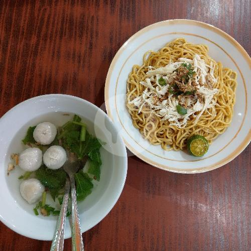
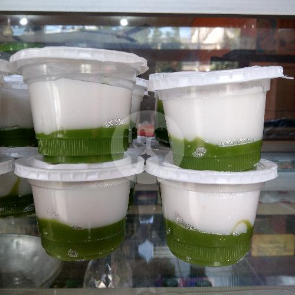
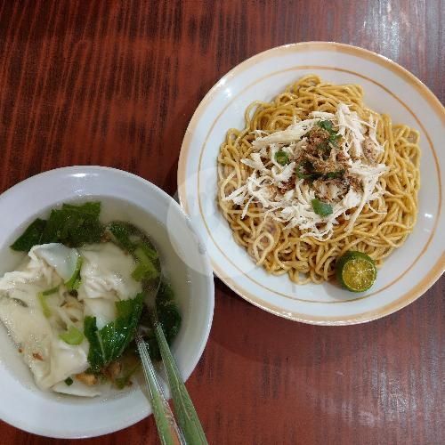

Restoran Mie
 |
 |
 |
|---|---|---|
| Mie Ayam Bakso | Jongkong | Mie Ayam Pangsit |
| Mie kenyal dengan topping ayam berbumbu, bakso empuk dan kuah yang hangat | Jajanan tradisional berbahan sagu dengan tekstur lembut, disajikan bersama gula merah manis dan santan gurih | Mie ayam lezat dengan pangsit, disajikan dengan kuah yang sedap |
@michaelsbs